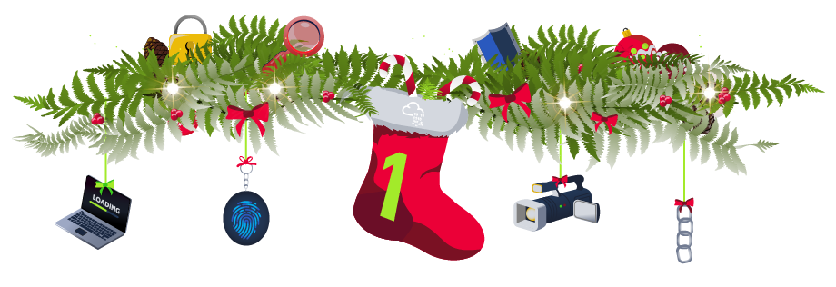
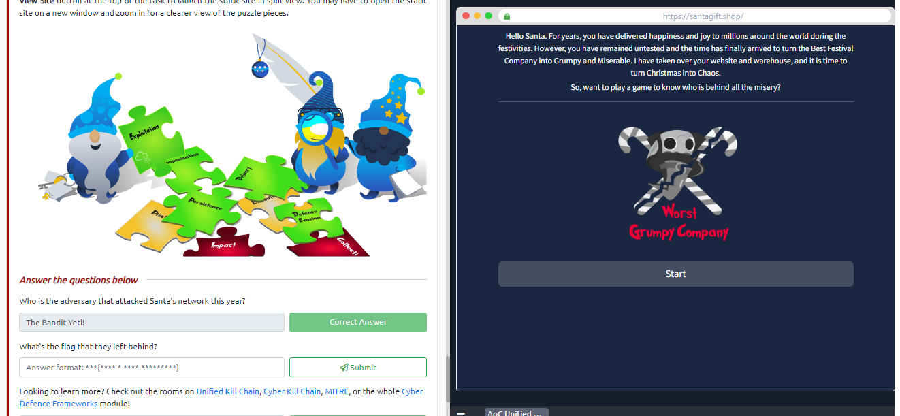
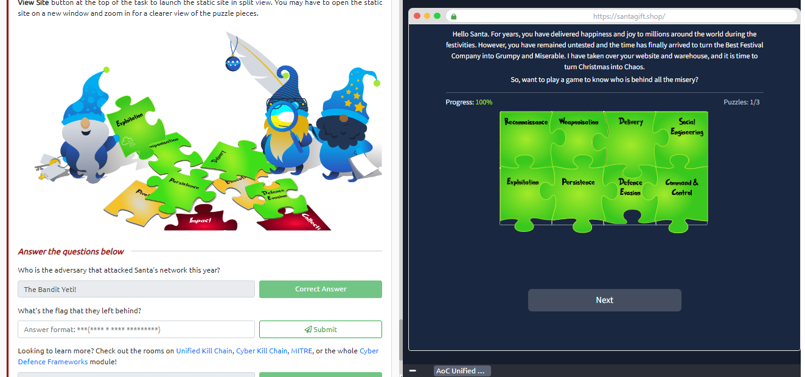
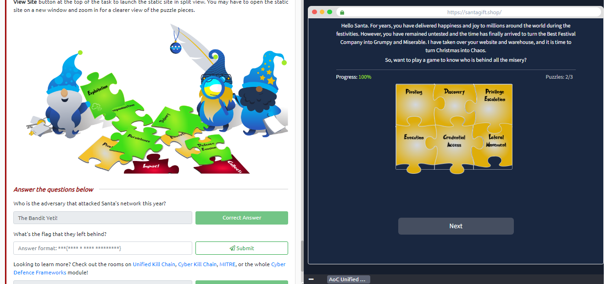
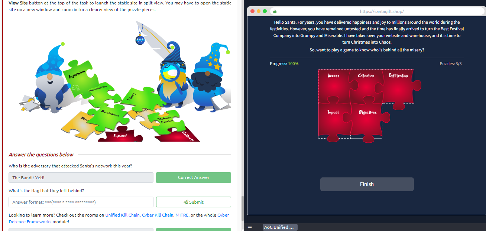
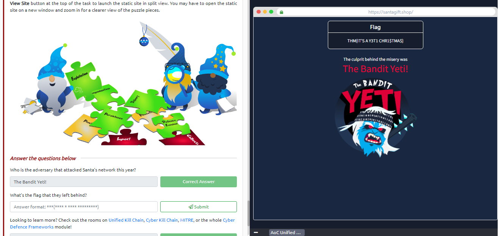
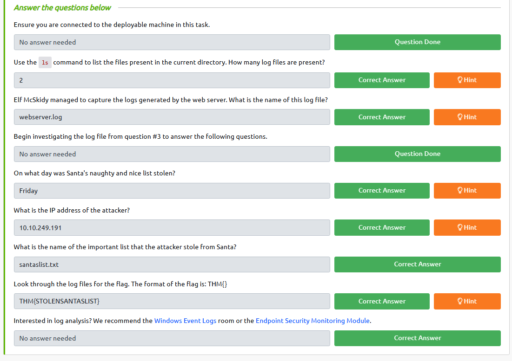

THM WALKTHROUGHS
TRYHACKME Advent of Cyber 2022 WALKTHROUGHS
Written by Silent Programmer
[Day 1] Frameworks Someone's coming to town!
Question 1-
Who is the adversary that attacked Santa's network this year?
Answer 1-
The Bandit Yeti!
Next we have to run the site from the View Site button then we have to complete 3 puzzles to get the flag.
lets start
First puzzle

Second Puzzle
Third Puzzle
Here is your flag
Question 2-
What's the flag that they left behind?
Answer 2-
THM{IT'S A Y3T1 CHR1$TMA$}
Day 1 Completed
[Day 2] Log Analysis Santa's Naughty & Nice Log

Day 2 Completed

Get started with Cyber Security in 24 days! Learn the basics and complete a new, beginner-friendly security exercise every day leading up to Christmas. It’s an advent calendar but with security challenges instead of chocolate!
|
6x Offensive Security Learn One Subscriptions ($12000) 1x TryHackMe will donate to your favourite charity ($2000) 5x Raspberry Pi 400 ($580) 10x Airpods 2nd Gen Pro ($2500) 6x DJI Drone ($3000) 10x GoPro ($3500) 10x CompTIA Security+ Vouchers ($2700) |
4x Remarkable 2 ($1200) 10x Flipper Zero ($2100) 12x ASUS ZenBook 14 8GB RAM, 512GB SSD, Intel i5 ($8400) 10x Hak5 WiFi Pineapple ($1200) 10x Hak5 Rubber Ducky ($600) 15x TryHackMe Monthly Subscriptions ($150) 5x $20 TryHackMe Swag Vouchers ($100) |
View Giveaway Terms & Conditions
- By participating in the competition you agree to be bound by these terms and conditions.
- Entrants must be over 16 years old on the date of their entry.
- Winners will be contacted by email on December 28th 2022 (if not earlier). Winners need to respond by December 30th, otherwise, the prize value will go to a charity of TryHackMe choice.
- Prizes are non-negotiable, non-transferable and non-refundable. No cash alternative is available. Where a Prize becomes unavailable for any reason, TryHackMe reserves the right to substitute that prize for a prize of equal or higher value.
- Prizes are limited to one per person.
- The Prize will be awarded to a randomly selected winner who has entered, using a random number generator. TryHackMe will not be held liable if the named prize becomes unavailable or cannot be fulfilled.
- Employees of TryHackMe are not eligible to enter.
- To the extent permitted by applicable law, TryHackMe shall not be liable under or in connection with these terms and conditions, the competition or any Prize for any indirect, special or consequential cost, expense, loss or damage suffered by a participant even if such cost, expense, loss or damage was reasonably foreseeable or might reasonably have been contemplated by the participant and TryHackMe and whether arising from breach of contract, tort, negligence, breach of statutory duty or otherwise.
- The name, address, and email address of the winner must be provided to TryHackMe if requested and will be shared to enable fulfilment of the Prize.
- The winner’s username may be posted on the social media profiles of TryHackMe after the winner has been selected.
- No purchase is necessary. Winners will not be required to pay to enter the competition.
- If the Prize is not available in the winner's region, TryHackMe will donate the Prize value to a charity of the winners choice.
Also, every day you complete a question, you get entered into another prize draw for the chance to win a mini-prize. Each day you can win one of two prizes: a 1-month TryHackMe subscription voucher or £15 swag voucher.
The prize winners for each day will be announced on Mondays on Twitter, and they will be contacted via email.
View Sample Certificate

Videos Featuring
Each task released has a supporting video walkthrough. You can expect to see some of your favourite cyber security video creators and streamers guiding you through the challenges! This year we are featuring John Hammond, Cybersecurity Meg, Husky Hacks, SecurityNinja, Neal Bridges, InsiderPHD, and more!
Topics Include
Topics that will be covered in the event are:

New tasks are released daily at random times between 12pm GMT and 8pm GMT, with the first challenge releasing on December 1st. They will vary in difficulty (although they will always be aimed at a beginner level).
Each task in the event will include instructions on interacting with the practical material. Please follow them carefully! Below are some general guidelines for getting connected:
- We highly recommend you complete the Tutorial room to learn more about getting connected.
- To access some target machines you deploy on TryHackMe, you will need to either use an OpenVPN client or deploy your own web-based AttackBox.
- You can deploy the AttackBox by clicking the blue "Start AttackBox" button at the top of this page.
- Using the web-based AttackBox, you can complete exercises through your browser. If you're a regular user, you can deploy the AttackBox for free for 1 hour a day; if you're subscribed, you can deploy it for an unlimited amount of time!
- One of the tasks in the event will require you to deploy the Kali Linux VM instead of the AttackBox. The Kali Linux VM will be free under the same rules as the AttackBox during the Advent of Cyber event.
- Some tasks will ask you to only deploy a VM without spawning the AttackBox.
- Some tasks will feature sites to interact with - in this case, launching the website using an appropriate button and opening it in split view will be enough.
Rules
- .tryhackme.com and the OpenVPN server are off-limits to probing, scanning, or exploiting.
- Users are only authorized to hack machines deployed in the rooms they have access to.
- Users are not to target or attack other users.
- Users should only enter the event once, using one account.
- Answers to questions are not to be shared; unless shown on videos/streams.
|
|
|
|


Join us on Instagram! |
Follow us on Facebook! |
See what we do on Pinterest! |


Follow us on social media for exclusive giveaways and the Advent of Cyber task release announcements!
If you want to share the event, feel free to use the graphic below:

Follow us on LinkedIn!
Follow us on Twitter!
Check out the subreddit!
Join us on Instagram!
Follow us on Facebook!
See what we do on Pinterest!
The Advent of Cyber event is completely free! However, check out some of the reasons to subscribe:

In celebration of Advent of Cyber, you can get 20% off personal annual subscriptions, using the discount code AOC2022 at checkout. This discount is only valid until the 7th of December, that's in:
If you want to gift a TryHackMe VIP subscription, you can purchase vouchers.
Christmas Swag
Want to rep swag from your favorite cyber security training platform?
We have a special edition Christmas Advent of Cyber t-shirt available now - check our swag store to order yours!

- Get full access to all of TryHackMe’s rooms and features, including Advent of Cyber
- Leverage competitive learning and collectively engage your team in Advent of Cyber tasks, measuring their progress
- Create customised learning to deep dive into further training topics based on Advent of Cyber and beyond
We’re also running a limited set of enterprise training webinars for TryHackMe for Business clients to deeply explore some of the topics that we are running through the Advent of Cyber. More details about this to follow as the event starts!
If you’re interested in exploring the plethora of business benefits TryHackMe brings, reach out to sales@tryhackme.com for a week-long free trial of the management dashboard. Customise paths and track your team’s progress for heightened engagement, enjoyment, and cyber security strength!
If you’re an existing client and want to get your wider team and company involved, please reach out to your dedicated customer success manager!
[Nightmare Before Elfmas]
All exercises in Advent of Cyber follow a fun Christmas story. This year, the elf McSkidy needs your help to investigate a serious breach and test all remaining systems for security flaws.

Ah, the holiday season is close again! You might not feel it yet, but way up north, Elf McSkidy is already busy making sure you get your presents this year. As she walked through the yard of Santa’s workshop this morning, a cup of hot chocolate in her hands, everything seemed to be going great! Gifts getting wrapped, reindeer exercising on treadmills, and Santa’s sleigh being polished, the whole place was just teeming with elf activity.
When McSkidy entered the office, she immediately noticed that something was, in fact, out of order. A big, dark, half-frosted card was just lying on her desk! Who placed it there? How did they get into the locked Security Operations Centre (SOC) room? What did they want from Best Festival Company’s Chief Information Security Officer?!
Not having to think twice about it, McSkidy slammed the big “ALARM” button and yelled: “Security staff! All hands on deck. We’ve got an incident!”
She did not have to wait long - pretty quickly, the corridors of Best Festival Company’s offices saw a team of security specialists rushing to the SOC room. The McReds, ethical hackers at Santa’s command who find vulnerabilities before the bad guys do, came from the workshop. Elf Exploit McRed was first, then Elf Recon, and finally Elf Pivot skating on the icy floors. The McBlues rushed from the yard, where they were setting up monitoring, as they are responsible for Santa’s defences. McSkidy watched as Elf Log McBlue came running in, followed by Elf Admin and Elf Forensic, the gear strapped to their belts jingling loudly. Santa’s Security Team surrounded McSkidy, all holding their breaths. McSkidy picked up the evil-looking card from her desk with trembling hands, opened it, and they all saw what was inside:
“But our shop wasn’t open! The door was locked when I entered. And you are monitoring the walls, right?” - McSkidy looked to her team for support. After a few clicks of the keyboard at the nearest computer, Admin McBlue announced: “It’s the gift shop website, McSkidy. It’s been defaced. There’s…. A puzzle? It says we’ll learn who did it if we solve it.”
The SOC room had just a few seconds of silence before the other elves started shouting:
“We need to investigate!”, “Check the logs!”, “Review monitoring!”, “Audit other systems!”, “Lock down the network!”
McSkidy held her hand up, waiting for the elves to calm down. “We’ve been through something like this last year. This year, we’re saving Christmas again!”
See you in the daily tasks! We hope you can help McSkidy and the Team find out who is their mysterious adversary, investigate the incident, and secure their systems once again. Please note that the difficulty of challenges might vary each day, but they will always be easily approachable by beginners in cyber security. Have fun in Advent of Cyber!
The Christmas story is used within some of the tasks, so make sure you read the above.
The Story

John Hammond is kicking off the Advent of Cyber 2022 with a video premiere at 2pm BST! Once the video becomes available, you'll be able to see a sneak peek of the other tasks and a walkthrough of this day's challenge!
Check out John Hammond's video walkthrough for day 1 here!
Best Festival Company Compromised
Someone is trying to stop Christmas this year and stop Santa from delivering gifts to children who were nice this year. The Best Festival Company’s website has been defaced, and children worldwide cannot send in their gift requests. There’s much work to be done to investigate the attack and test other systems! The attackers have left a puzzle for the Elves to solve and learn who their adversaries are. McSkidy looked at the puzzle and recognised some of the pieces as the phases of the Unified Kill Chain, a security framework used to understand attackers. She has reached out to you to assist them in recovering their website, identifying their attacker, and helping save Christmas.
Security Frameworks
Organisations such as Santa’s Best Festival Company must adjust and improve their cybersecurity efforts to prevent data breaches. Security frameworks come into play to guide in setting up security programs and improve the security posture of the organisation.
Security frameworks are documented processes that define policies and procedures organisations should follow to establish and manage security controls. They are blueprints for identifying and managing the risks they may face and the weaknesses in place that may lead to an attack.
Frameworks help organisations remove the guesswork of securing their data and infrastructure by establishing processes and structures in a strategic plan. This will also help them achieve commercial and government regulatory requirements.
Let’s dive in and briefly look at the commonly used frameworks.
NIST Cybersecurity Framework
The Cybersecurity Framework (CSF) was developed by the National Institute of Standards and Technology
(NIST), and it provides detailed guidance for organisations to manage and
reduce cybersecurity risk. The framework focuses on five
essential functions: Identify -> Protect -> Detect -> Respond ->
Recover. With these functions, the framework allows organisations to prioritise their cybersecurity investments and engage in continuous improvement towards a target cybersecurity profile.
ISO 27000 Series
The International Organization of Standardization (ISO) develops a series of frameworks for different industries and sectors. The ISO 27001 and 27002 standards are commonly known for cybersecurity and outline the requirements and procedures for creating, implementing and managing an information security management system (ISMS). These standards can be used to assess an institution’s ability to meet set information security requirements through the application of risk management.
MITRE ATT&CK Framework
Identifying adversary plans of attack can be challenging to embark on blindly. They can be understood through the behaviours, methods, tools and strategies established for an attack, commonly known as Tactics, Techniques and Procedures (TTPs). The MITRE ATT&CK framework is a knowledge base of TTPs, carefully curated and detailed to ensure security teams can identify attack patterns. The framework’s structure is similar to a periodic table, mapping techniques against phases of the attack chain and referencing system platforms exploited.
This framework highlights the detailed approach it provides when looking at an attack. It brings together environment-specific cybersecurity information to provide cyber threat intelligence insights that help teams develop effective security programs for their organisations. Dive further into the framework by checking out the dedicated MITRE room.
Cyber Kill Chain
A key concept of this framework was adopted from the military with the terminology kill chain, which describes the structure of an attack and consists of target identification, decision and order to attack the target, and finally, target destruction. Developed by Lockheed Martin, the cyber kill chain describes the stages commonly followed by cyber attacks and security defenders can use the framework as part of intelligence-driven defence.
There are seven stages outlined by the Cyber Kill Chain, enhancing visibility and understanding of an adversary’s tactics, techniques and procedures.

Dive further into the kill chain by checking out the dedicated Cyber Kill Chain room.
Unified Kill Chain
As established in our scenario, Santa’s team have been left with a clue on who might have attacked them and pointed out to the Unified Kill Chain (UKC). The Elf Blue Team begin their research.
The Unified Kill Chain can be described as the unification of the MITRE ATT&CK and Cyber Kill Chain frameworks. Published by Paul Pols in 2017 (and reviewed in 2022), the UKC provides a model to defend against cyber attacks from the adversary’s perspective. The UKC offers security teams a blueprint for analysing and comparing threat intelligence concerning the adversarial mode of working.
The Unified Kill Chain describes 18 phases of attack based on Tactics, Techniques and Procedures (TTPs). The individual phases can be combined to form overarching goals, such as gaining an initial foothold in a targeted network, navigating through the network to expand access and performing actions on critical assets. Santa’s security team would need to understand how these phases are put together from the attacker’s perspective.
CYCLE 1: In
The main focus of this series of phases is for an attacker to gain access to a system or networked environment. Typically, cyber-attacks are initiated by an external attacker. The critical steps they would follow are:
- Reconnaissance: The attacker performs research on the target using publicly available information.
- Weaponisation: Setting up the needed infrastructure to host the command and control centre (C2) is crucial in executing attacks.
- Delivery: Payloads are malicious instruments delivered to the target through numerous means, such as email phishing and supply chain attacks.
- Social Engineering: The attacker will trick their target into performing untrusted and unsafe action against the payload they just delivered, often making their message appear to come from a trusted in-house source.
- Exploitation: If the attacker finds an existing vulnerability, a software or hardware weakness, in the network assets, they may use this to trigger their payload.
- Persistence: The attacker will leave behind a fallback presence on the network or asset to make sure they have a point of access to their target.
- Defence Evasion: The attacker must remain anonymous throughout their exploits by disabling and avoiding any security defence mechanisms enabled, including deleting evidence of their presence.
- Command & Control: Remember the infrastructure that the attacker prepared? A communication channel between the compromised system and the attacker’s infrastructure is established across the internet.

This phase may be considered a loop as the attacker may be forced to change tactics or modify techniques if one fails to provide an entrance into the network.
CYCLE 2: Through
Under this phase, attackers will be interested in gaining more access and privileges to assets within the network.
The attacker may repeat this phase until the desired access is obtained.
 Pivoting: Remember the system that the attacker may use for persistence? This system will become the attack launchpad for other systems in the network.
Pivoting: Remember the system that the attacker may use for persistence? This system will become the attack launchpad for other systems in the network.- Discovery: The attacker will seek to gather as much information about the compromised system, such as available users and data. Alternatively, they may remotely discover vulnerabilities and assets within the network. This opens the way for the next phase.
- Privilege Escalation: Restricted access prevents the attacker from executing their mission. Therefore, they will seek higher privileges on the compromised systems by exploiting identified vulnerabilities or misconfigurations.
- Execution: With elevated privileges, malicious code may be downloaded and executed to extract sensitive information or cause further havoc on the system.
- Credential Access: Part of the extracted sensitive information would include login credentials stored in the hard disk or memory. This provides the attacker with more firepower for their attacks.
- Lateral Movement: Using the extracted credentials, the attacker may move around different systems or data storages within the network, for example, within a single department.
NOTE: A key element that one may think is missing is Access. This is not formally covered as a phase of the UKC, as it overlaps with other phases across the different levels, leading to the adversary achieving their goals for an attack.
CYCLE 3: Out
The Confidentiality, Integrity and Availability (CIA) of assets or services are compromised during this phase. Money, fame or sabotage will drive attackers to undertake their reasons for executing their attacks, cause as much damage as possible and disappear without being detected.
- Collection: After finding the jackpot of data and information, the attacker will seek to aggregate all they need. By doing so, the assets’ confidentiality would be compromised entirely, especially when dealing with trade secrets and financial or personally identifiable information (PII) that is to be secured.
- Exfiltration: The attacker must get his loot out of the network. Various techniques may be used to ensure they have achieved their objectives without triggering suspicion.
- Impact: When compromising the availability or integrity of an asset or information, the attacker will use all the acquired privileges to manipulate, interrupt and sabotage. Imagine the reputation, financial and social damage an organisation would have to recover from.
- Objectives: Attackers may have other goals to achieve that may affect the social or technical landscape that their targets operate within. Defining and understanding these objectives tends to help security teams familiarise themselves with adversarial attack tools and conduct risk assessments to defend their assets.

Saving The Best Festival Company
Having gone through the UKC with Santa’s security team, it is evident that better defensive strategies must be implemented to raise resilience against attacks.
Your task is to help the Elves solve a puzzle left for them to identify who is trying to stop Christmas. Click the View Site button at the top of the task to launch the static site in split view. You may have to open the static site on a new window and zoom in for a clearer view of the puzzle pieces.

What's the flag that they left behind?
Looking to learn more? Check out the rooms on Unified Kill Chain, Cyber Kill Chain, MITRE, or the whole Cyber Defence Frameworks module!
The Story

Check out CMNatic's video walkthrough for Day 2 here!
Santa’s Security Operations Center (SSOC) has noticed one of their web servers, santagift.shop has been hijacked by the Bandit Yeti APT group. Elf McBlue’s task is to analyse the log files captured from the web server to understand what is happening and track down the Bandit Yeti APT group.

Learning Objectives
In today’s task, you will:
- Learn what log files are and why they’re useful
- Understand what valuable information log files can contain
- Understand some common locations these logs file can be found
- Use some basic Linux commands to start analysing log files for valuable information
- Help Elf McBlue track down the Bandit Yeti APT!
What Are Log Files and Why Are They Useful
Log files are files that contain historical records of events and other data from an application. Some common examples of events that you may find in a log file:
- Login attempts or failures
- Traffic on a network
- Things (website URLs, files, etc.) that have been accessed
- Password changes
- Application errors (used in debugging)
- and many, many more
By making a historical record of events that have happened, log files are extremely important pieces of evidence when investigating:
- What has happened?
- When has it happened?
- Where has it happened?
- Who did it? Were they successful?
- What is the result of this action?
For example, a systems administrator may want to log the traffic happening on a network. We can use logging to answer the questions above in a given scenario:
A user has reportedly accessed inappropriate material on a University network. With logging in place, a systems administrator could determine the following:
| Question | Answer |
| What has happened? | A user is confirmed to have accessed inappropriate material on the University network. |
| When has it happened? | It happened at 12:08 on Tuesday, 01/10/2022. |
| Where has it happened? | It happened from a device with an IP address (an identifier on the network) of 10.3.24.51. |
| Who did it? Were they successful? | The user was logged into the university network with their student account. |
| What is the result of the action? | The user was able to access inappropriatecontent.thm. |
What Does a Log File Look Like?
Log files come in all shapes and sizes. However, a useful log will contain at least some of the following attributes:
- A timestamp of the event (I.e. Date & Time)
- The name of the service that is generating the logfile (I.e. SSH is a remote device management protocol that allows a user to login into a system remotely)
- The actual event the service logs (i.e., in the event of a failed authentication, what credentials were tried, and by whom? (IP address)).

Common Locations of Log Files
Windows
Windows features an in-built application that allows us to access historical records of events that happen. The Event Viewer is illustrated in the picture below:

These events are usually categorised into the following:
| Category | Description | Example |
| Application | This category contains all the events related to applications on the system. For example, you can determine when services or applications are stopped and started and why. | The service "tryhackme.exe" was restarted. |
| Security | This category contains all of the events related to the system's security. For example, you can see when a user logs in to a system or accesses the credential manager for passwords. | User "cmnatic" successfully logged in. |
| Setup | This category contains all of the events related to the system's maintenance. For example, Windows update logs are stored here. | The system must be restarted before "KB10134" can be installed. |
| System | This category contains all the events related to the system itself. This category of events contains logs that relate to changes in the system itself. For example, when the system is powered on or off or when devices such as USB drives are plugged-in or removed. | The system unexpectedly shutdown due to power issues. |
Linux (Ubuntu/Debian)
On this flavour of Linux, operating system log files (and often software-specific such as apache2) are located within the /var/log directory. We can use the ls in the /var/log directory to list all the log files located on the system:
cmnatic@aoc2022-day-2:/var/log$ ls -lah
total 724K
drwxrwxr-x 9 root syslog 4.0K Nov 14 10:59 .
drwxr-xr-x 13 root root 4.0K Oct 26 2020 ..
drwxr--r-x 3 root root 4.0K Nov 14 10:56 amazon
drwxr-xr-x 2 root root 4.0K Oct 26 2020 apt
-rw-r----- 1 syslog adm 11K Nov 14 11:03 auth.log
-rw-rw---- 1 root utmp 0 Oct 26 2020 btmp
-rw-r--r-- 1 root root 7.3K Nov 14 10:59 cloud-init-output.log
-rw-r--r-- 1 syslog adm 251K Nov 14 10:59 cloud-init.log
drwxr-xr-x 2 root root 4.0K Oct 7 2020 dist-upgrade
-rw-r--r-- 1 root adm 36K Nov 14 10:59 dmesg
-rw-r--r-- 1 root adm 36K Nov 14 10:56 dmesg.0
-rw-r--r-- 1 root root 12K Oct 26 2020 dpkg.log
drwxr-sr-x+ 3 root systemd-journal 4.0K Nov 14 10:55 journal
-rw-r----- 1 syslog adm 98K Nov 14 10:59 kern.log
drwxr-xr-x 2 landscape landscape 4.0K Nov 14 10:57 landscape
-rw-rw-r-- 1 root utmp 286K Nov 14 11:03 lastlog
drwx------ 2 root root 4.0K Nov 14 10:55 private
-rw-r----- 1 syslog adm 207K Nov 14 11:03 syslog
drwxr-x--- 2 root adm 4.0K Nov 14 10:55 unattended-upgrades
-rw-rw-r-- 1 root utmp 8.3K Nov 14 11:03 wtmp
The following table highlights some important log files:
| Category | Description | File (Ubuntu) | Example |
| Authentication | This log file contains all authentication (log in). This is usually attempted either remotely or on the system itself (i.e., accessing another user after logging in). | auth.log | Failed password for root from 192.168.1.35 port 22 ssh2. |
| Package Management | This log file contains all events related to package management on the system. When installing a new software (a package), this is logged in this file. This is useful for debugging or reverting changes in case this installation causes unintended behaviour on the system. | dpkg.log | 2022-06-03 21:45:59 installed neofetch. |
| Syslog | This log file contains all events related to things happening in the system's background. For example, crontabs executing, services starting and stopping, or other automatic behaviours such as log rotation. This file can help debug problems. | syslog | 2022-06-03 13:33:7 Finished Daily apt download activities.. |
| Kernel | This log file contains all events related to kernel events on the system. For example, changes to the kernel, or output from devices such as networking equipment or physical devices such as USB devices. | kern.log | 2022-06-03 10:10:01 Firewalling registered |
Looking Through Log Files
Log files can quickly contain many events and hundreds, if not thousands, of entries. The difficulty in analysing log files is separating useful information from useless. Tools such as Splunk are software solutions known as Security Information and Event Management (SIEM) is dedicated to aggregating logs for analysis. Listed in the table below are some of the advantages and disadvantages of these platforms:| Advantage | Disadvantage |
| SIEM platforms are dedicated services for log analysis. | Commercial SIEM platforms are expensive to license and run. |
| SIEM platforms can collect a wide variety of logs - from devices to networking equipment. | SIEM platforms take considerable time to properly set up and configure. |
| SIEM platforms allow for advanced, in-depth analysis of many log files at once. | SIEM platforms require training to be properly used. |
Luckily for us, most operating systems already come with a set of tools that allow us to search through log files. In this room, we will be using the grep command on Linux.
Grep 101
Grep is a command dedicated to searching for a given text in a file. Grep takes a given input (a text or value) and searches the entire file for any text that matches our input.
Before using grep, we have to find the location of the log file that we want to search for. By default, grep will use your current working directory. You can find out what your current working directory is by using pwd. For example, in the terminal below, we are in the working directory /home/cmnatic/aoc2022/day2/:
cmnatic@thm:~/aoc2022/day2 pwd
/home/cmnatic/aoc2022/day2/
If we wish to change our current working directory, you can use cd followed by the new path you wish to change to. For example, cd /my/path/here. Once we've determined that we are in the correct directory, we can use ls to list the files and directories in our current working path. An example of this has been put into the terminal below:
cmnatic@aoc2022-day-2:~$ ls -lah
webserver.log helloworld.txt mydirectory
Now that we know where our log files are, we can begin to proceed with learning how to use grep. To use grep, we need to do three things:
- Call the command.
- Specify any options that we wish to use (this will later be explained), but for now, we can ignore this.
- Specify the location of the file we wish to search through (
grepwill first assume the file is in your current directory unless you tell it otherwise by providing the path to the file i.e. /path/to/our/logfile.log).
For example, in the terminal below, we are using grep to look through the log file for an IP address. The log file is located in our current working directory, so we do not need to provide a path to the log file - just the name of the log file.
ubuntu@thm:~ grep "192.168.1.30" access.log
192.168.1.30 - - [14/Nov/2022:00:53:07 +0000] "GET / HTTP/1.1" 200 13742
192.168.1.30 - - [14/Nov/2022:00:53:43 +0000] "HEAD
In the terminal above, we can see two entries in this log file (access.log) for the IP address "192.168.1.30". For reference, we've narrowed down two entries from a log file with 469 entries. Our life has already been made easier! Here are some ideas for things you may want to use grep to search a log file for:
- A name of a computer.
- A name of a file.
- A name of a user account.
- An IP address.
- A certain timestamp or date.
As previously mentioned, we can provide some options to grep to enable us to have more control over the results of grep. The table below contains some of the common options that you may wish to use with grep.
| Option | Description | Example |
| -i | Perform a case insensitive search. For example, "helloworld" and "HELLOWORLD" will return the same results | grep -i "helloworld" log.txt and grep -i "HELLOWORLD" log.txt will return the same matches. |
| -E | Searches using regex (regular expressions). For example, we can search for lines that contain either "thm" or "tryhackme" |
|
| -r | Search recursively. For example, search all of the files in a directory for this value. |
|
Further options available in grep can be searched within grep's manual page via man grep
Practical:

For today's task, you will need to deploy the machine attached to this task by pressing the green "Start Machine" button located at the top-right of this task. The machine should launch in a split-screen view. If it does not, you will need to press the blue "Show Split Screen" button near the top-right of this page.
If you wish, you can use the following credentials to access the machine using SSH (remember to connect to the VPN first):
- IP address: MACHINE_IP
- Username: elfmcblue
- Password: tryhackme!
Use the knowledge you have gained in today's task to help Elf McBlue track down the Bandit Yeti APT by answering the questions below.
Use the ls command to list the files present in the current directory. How many log files are present?
Elf McSkidy managed to capture the logs generated by the web server. What is the name of this log file?
Begin investigating the log file from question #3 to answer the following questions.
On what day was Santa's naughty and nice list stolen?
What is the IP address of the attacker?
What is the name of the important list that the attacker stole from Santa?
Look through the log files for the flag. The format of the flag is: THM{}
Interested in log analysis? We recommend the Windows Event Logs room or the Endpoint Security Monitoring Module.